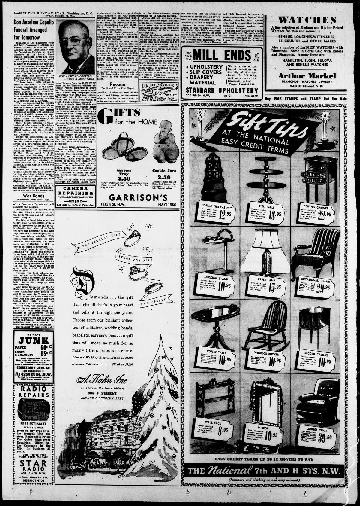

Don Anselmo CopelloDon Anselmo Copello
Evening Star. Washington, D.C., December 10, 1944. Page 10. Published by W.D. Wallach & Hope. A daily newspaper, 1854–1972.Evening Star. Washington, D.C., 10 de diciembre de 1944. Página 10. Publicado por W.D. Wallach & Hope. Periódico diario, 1854–1972. View the originalVer el original

The Evening Star published tributes mourning the death of Dominican Ambassador Anselmo Copello, praising his distinction as a diplomat and cooperative spirit on matters of mutual concern. Copello, head of the Dominican Republic's main tobacco company based in Santiago, had returned to Washington only days before his death following three months of official business in his home country. Minister Counselor Dr. J. R. Rodríguez was designated to direct embassy affairs until a successor was appointed.El Evening Star rindió homenaje fúnebre a la memoria del fenecido embajador dominicano Anselmo Copello, encomiando su porte diplomático y su permanente disposición colaborativa en materias de recíproco interés. Copello, directivo de la compañía tabacalera radicada en Santiago de los Caballeros, había retornado a Washington escasos días antes de su partida terrenal luego de permanecer tres meses atendiendo gestiones de Estado en su patria. El ministro consejero Dr. J. R. Rodríguez quedó a cargo de los despachos de la misión hasta la designación de un sucesor titular.
FULL TEXT:TEXTO COMPLETO:
Evening Star December 10, 194410 de diciembre de 1944
Don Anselmo CopelloDon Anselmo Copello
Funeral ArrangedFuneral arreglado
For TomorrowPara mañana
Members of the diplomatic corps and high Government officials will attend funeral services for Don Anselmo Copello, Ambassador from the Dominican Republic, at 11 a.m tomorrow at the Sacred Heart Church, Sixteenth street and Park road N.W. After temporary burial in Arlington Cemetery, the body will be taken to the Dominican Republic.Miembros del cuerpo diplomático y altos oficiales del Gobierno asistirán a los servicios fúnebres de Don Anselmo Copello, Embajador de la República Dominicana, a las 11 a. m. mañana en la Iglesia del Sagrado Corazón, calle Dieciséis y Park road N.W. Después del entierro temporal en el Cementerio de Arlington, el cuerpo será llevado a la República Dominicana.
The Ambassador, who was 65, died yesterday in Doctors Hospital of a heart attack which followed pneumonia. He had been ill two days.El Embajador, que tenía 65 años, murió ayer en el Hospital Doctors de un ataque al corazón que siguió a una neumonía. Había estado enfermo dos días.
His work was praised in the following statement made yesterday by Secretary of State Stettinius:Su trabajo fue elogiado en la siguiente declaración hecha ayer por el Secretario de Estado Stettinius:
“I have been greatly grieved to learn of the death of the distinguished Ambassador of the Dominican Republic. His excellency Anselmo Copella. In my association with him in dealing with the problems of mutual interest, I have come to know his outstanding qualities as a diplomat and as a friend.«Me ha entristecido grandemente saber de la muerte del distinguido Embajador de la República Dominicana. Su excelencia Anselmo Copella. En mi asociación con él al tratar los problemas de interés mutuo, he llegado a conocer sus sobresalientes cualidades como diplomático y como amigo.
“He has represented his country with distinction and has always evinced a most helpful spirit of cooperation in dealing with matters of common concern. The Dominican people will rightly mourn the passing of a gifted statesman and his many friends in this country will sincerely share their sorrow.”«Ha representado a su país con distinción y siempre ha evidenciado un espíritu de cooperación de lo más útil al tratar asuntos de interés común. El pueblo dominicano lamentará con razón el fallecimiento de un estadista dotado y sus muchos amigos en este país sinceramente compartirán su dolor.»
Senor Copello returned to Washington Monday from the Dominican Republic, where he had been on official business for three months. He was accompanied by his only son, Jeronimo.El Señor Copello regresó a Washington el lunes desde la República Dominicana, donde había estado en negocios oficiales por tres meses. Fue acompañado por su único hijo, Jeronimo.
Before his appointment as Ambassador to this country in November, 1943, Senor Copello had never served as a government official except for several honorary posts. His credentials were received by President Roosevelt on December 20, 1943. He succeeded Dr. J. M. Troncoso, now Secretary of the Treasury of the Dominican Republic.Antes de su nombramiento como Embajador en este país en noviembre de 1943, el Señor Copello nunca había servido como oficial gubernamental excepto por varios puestos honorarios. Sus credenciales fueron recibidas por el presidente Roosevelt el 20 de diciembre de 1943. Sucedió al Dr. J. M. Troncoso, ahora Secretario del Tesoro de la República Dominicana.
President of the principal tobacco company of the Dominican Republic, Senor Copello’s home was in Santiago.Presidente de la principal compañía tabacalera de la República Dominicana, la casa del Señor Copello estaba en Santiago.
Besides his widow, Senora de Copello, and his son, he is survived by four daughters, Adelina, Argentina, Ileana and Margarita. The family lives at the Embassy, 4530 Sixteenth street N.W.Además de su viuda, la Señora de Copello, y su hijo, le sobreviven cuatro hijas, Adelina, Argentina, Ileana y Margarita. La familia vive en la Embajada, 4530 calle Dieciséis N.W.
Dr. J. R. Rodriguez, Minister Counselor, will direct the affairs of the Embassy until further arrangements are made by his government.El Dr. J. R. Rodriguez, Ministro Consejero, dirigirá los asuntos de la Embajada hasta que se hagan arreglos adicionales por su gobierno.